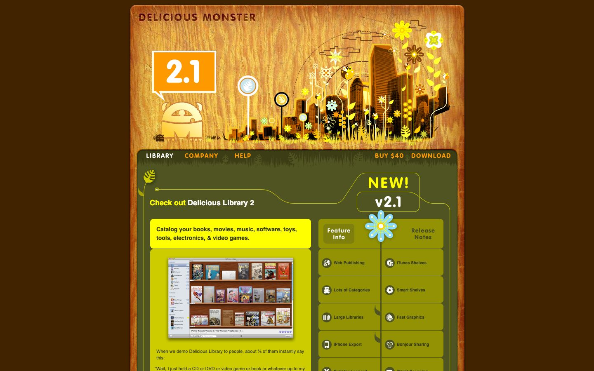

References / Website / 159
Delicious Monster website, 2009
The page for Delicious Library 2, archived June 2009: a wood-grain header with vector flowers above olive panels, and a screenshot of the app’s wooden shelves.
- Source
- www.delicious-monster.com (archived copy)
- Creator
- Delicious Monster
- Made
- 2009
- Style
- Skeuomorphism (agent-proposed, not yet reviewed by a person)
- Moods
- Warm, whimsical, organic
- Evidence
- Captured from the Internet Archive with
tools/capture.mjs(headless Chrome, 1440 × 900) on 28 September 2026 and inspected. The archived page may lack some images or scripts that the live page had. - Reviewed
- Rights
- Third-party work, stored with credit for commentary. License: unverified. Rights policy
Observed
- A large rounded header shows orange and brown wood grain with a monster mascot, a “2.1” speech bubble, and a vector skyline with flowers and birds.
- Below, olive green panels with thin yellow lines hold the navigation (Library, Company, Help, Buy $40, Download) in small capitals.
- A yellow box holds a screenshot of Delicious Library 2 with book and comic covers on three wooden shelves.
- Feature buttons are olive rectangles with small round icons, divided by a stem-like line with a blue flower.
Why it belongs
All metrics except radius fail: the wood grain and panels are bitmap images (49% image share), so no gradient, pattern, or shadow is measured.
Borrow
Pair a real wood-grain header with the product’s own shelf screenshot to connect the site and the app.
Measured
Machine-extracted by tools/extract-traits.js on . Full measurement.
- Type families
- Helvetica (100%)
- Type scale ratio
- 1.17
- Median radius
- 0 px
- Mean chroma
- 0.22
- Palette
- #412300 72%
- #333717 27%
- #cccc00 1%
- #ffffff 0%
- #ffff00 0%

